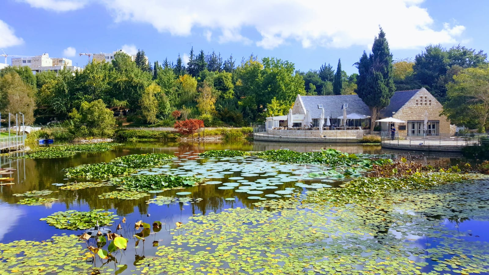
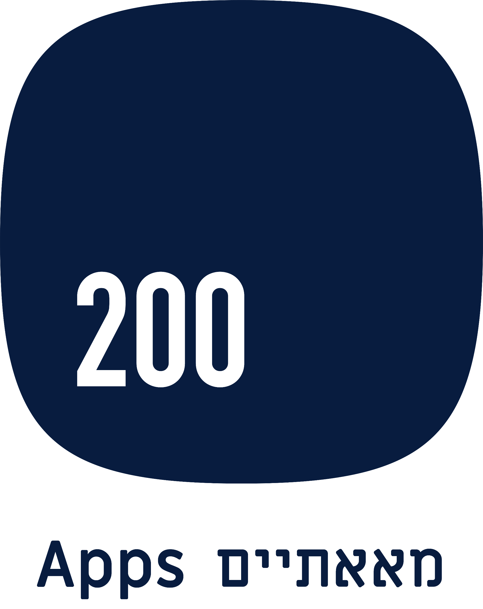
אפליקציה למבקר בגן הבוטני
זה הגן היום, וזה מה שאפשר להחזיק בכיס.
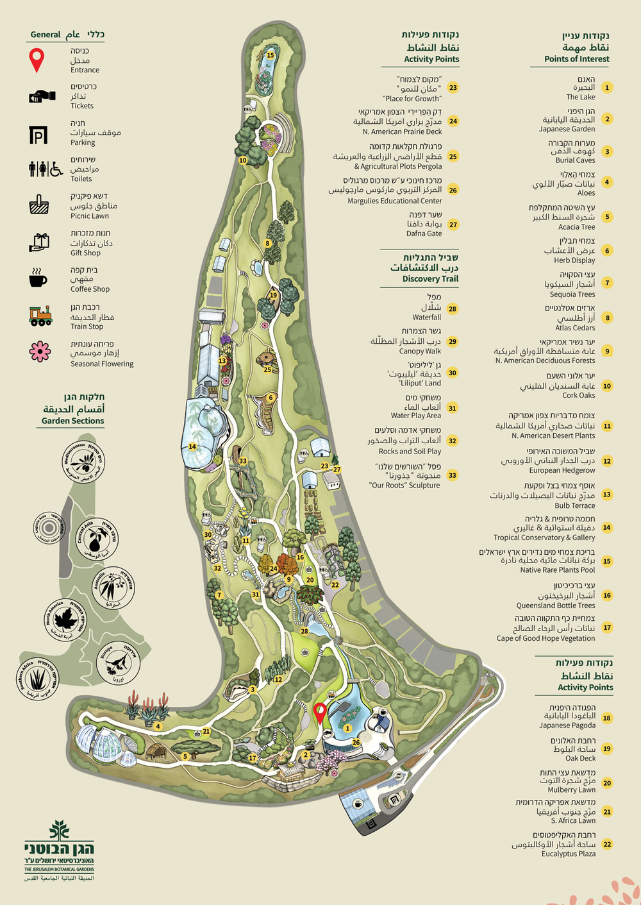
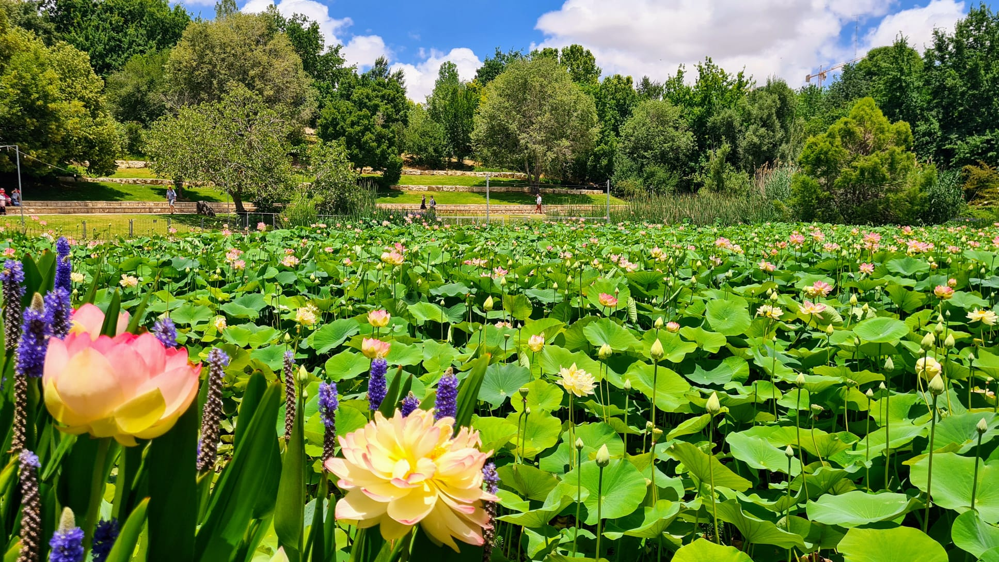
לגן הבוטני יש שלושה נכסים שאפליקציה נבנתה עבורם
מאגר צמחים מקוון
קיים באתר, עם סינון. התוכן הבוטני כבר כתוב.
חנות הגן
מסחר מקוון פעיל, עם קהל שקונה.
קורסים וסדנאות
קמפוס שלם עם הרשמה מקוונת.
פודקאסט ומאמרים
בספוטיפיי, ומאמרים לפי עונה ולפי חלקה.
החוויה קיימת. היא פשוט מפוזרת בין ארבעה מקומות.
השילוט ליד הצמחים
מידע מדויק ומקצועי, כתוב בידי בוטנאים. עונה על שאלה אחת: מה הצמח שאני עומד מולו.
המפה המודפסת
התמצאות טובה בשטח ומזכרת נחמדה. לא יודעת איפה המבקר עומד, ולא משתנה עם העונה.
האתר ומאגר הצמחים
עומק בוטני אמיתי, עם סינון וחיפוש. נצרך בבית, לפני הביקור או אחריו.
הניוזלטר והרשתות
אירועים, פריחה וחדשות שמגיעים לקהל. מגיעים בזמן שלהם, לא בזמן שהמבקר בגן.
מה פורח עכשיו, ואיפה?
איך מגיעים לאוסף הבונסאי?
מה מתאים לילד בן חמש בשעה?
מה יש כאן שלא ראיתי בביקור הקודם?
מתי הסדנה הבאה, ואיך נרשמים?
9 גנים בוטניים בעולם עם אפליקציה רשמית
Fairchild, מיאמי
מפה ומסלול מותאם, אוספי צמחים, סיורים, תזמון טראם, הזמנת מזון, חנות צמחים, וכרטיס כניסה שהופך למנוי.
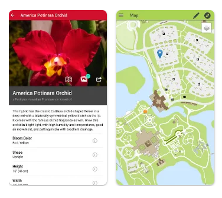
שיקגו · אוסטרליה · פיניקס · דארווין
מפה, חיפוש צמח לפי שם וצבע, "מה פורח עכשיו", מסלולי הליכה, שירותים וחניה, ותוכן שעובד בלי רשת.
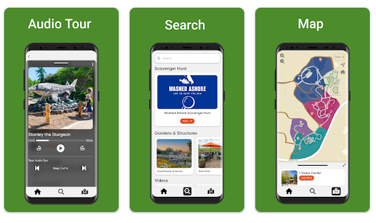
סן דייגו · אוקלנד · מינסק · אנדרומדה
סיור עצמי, סיפורי מקום, אודיו ותמונות. מוצר צנוע, ממוקד באוסף אחד או בשביל אחד.
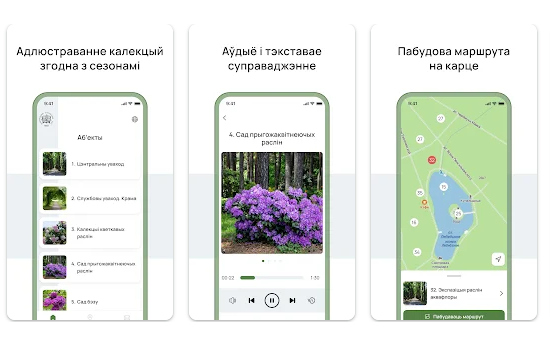
- שירותים, מים, בית קפה וחניה, במרחק הליכה בדקות
- ניווט חזרה לשער, למי שהתרחק ולא זוכר איך יצא
- סימון מקום החניה בלחיצה, כמו באפליקציות חניון
- שם עממי ומדעי, אזור מוצא, עונת פריחה ומצב שימור
- המאמר על החלקה נפתח מתוך הכרטיס, לא באתר נפרד
- צמחים קרובים, ושמירה למועדפים לביקור הבא
- "מה פורח השבוע", מתוך היומן הבוטני שכבר קיים אצלכם
- המאמרים שלכם לפי עונה, מוצגים בעונה שאליה הם שייכים
- מסלול בעקבות הפריחה, והתראה כשמשהו נדיר בשיא
- לפי זמן פנוי ולפי קהל: משפחות, בוטניקה, נגישות, קבוצות
- מסלול דגל אחד להשקה: 300 הצמחים בסכנת הכחדה, על אותה תשתית מפה וכרטיס צמח
- סן דייגו עשתה בדיוק את זה עם אוסף צמחי המרפא שלה
- הפודקאסט שלכם בספוטיפיי כבר קיים, ונכנס לאפליקציה כמו שהוא
- קריינות קצרה לכל עצירה, כדי שהעיניים יישארו על הצמח
- תמלול לכל קטע: לכבדי שמיעה, ולמי שמעדיף לקרוא
- עברית ואנגלית מהיום הראשון, ותשתית להוספת שפה
- בחירת מסלול בלי מדרגות, לכיסא גלגלים או לעגלה
- מיקום ספסלים, שיפועים ומקומות צל, על המפה
- חידות מבוססות מקום, שנפתחות רק כשמגיעים לצמח
- תגים דיגיטליים ויומן טבע שנשאר גם בבית
- מעודד להסתכל על הצמח, לא להחליף אותו במסך
- מפה, כרטיסי צמח ואודיו נטענים מראש, בבית או בשער
- תייר לא צורך חבילת נדידה כדי לקרוא שילוט
- המפה ממשיכה לעבוד גם כשאין למה להתחבר
- הרשמה ורכישת כרטיס בלחיצה, בלי מעבר לאתר חיצוני
- כמה מקומות נשארו, בזמן אמת
- הכרטיס נשמר באפליקציה ומוצג בשער
- "הלוטוסים בשיאם השבוע", יוצא רק כשזה נכון
- "נותרו 4 מקומות בסדנה", למי שכבר הביע עניין
- לפי העדפות, לא לכולם. התראה מיותרת מסירים את האפליקציה
- כל מה שנמכר בחנות הגן, לא רק זרעים
- "ראיתי את זה בגן": קנייה ברגע החשק
- הנחת חברי מנוי מתעדכנת אוטומטית בקנייה
- מה שאהב נשמר, וממתין לביקור הבא
- העדפות שמעצבות את המסלולים ואת ההתראות
- המנוי, הכרטיסים וההרשמות במקום אחד, עם תזכורת חידוש
- אילו מסלולים נבחרים, ואיפה מבקרים עוצרים באמצע
- אילו צמחים נצפים, לעומת מה שהנחתם שיחפשו
- מה ממיר להרשמה ולרכישה, ומה לא
ושלושה רעיונות מתקדמים, לשלב הבא
זיהוי צמח בצילום
המבקר מצלם עלה או פרח ומקבל את השם, המוצא והסיפור, מתוך מאגר הצמחים שלכם.
שאל את הגן
"מה כדאי לראות עם ילד בן חמש בשעה וחצי?" תשובה מהתוכן של הגן עצמו, מהמאגר ומהמסלולים. לא מהאינטרנט.
מסלול שמתאים את עצמו
כמו הרגע הראשון בספוטיפיי שבו נשאלים מה מעניין אותך: משפחה, בוטניקה, נגישות. ומשם המסלול נבנה לפי העונה, הגיל והזמן הפנוי.
Fairchild במיאמי היא היחידה במדגם שחיברה את שלושת אלה לתוך האפליקציה. אצלה כרטיס הכניסה נזקף לחברות עם 10% הנחה, והיא גם האפליקציה עם המעורבות הגבוהה במדגם. כלומר המהלך הזה כבר נבדק בשטח, ולא אצלנו על הנייר.
200Apps
מודל מקצה-לקצה: מחקר, אפיון ממשק, עיצוב, פיתוח, QA ותחזוקה. מפות אינטראקטיביות, מערכות תוכן, חנויות מקוונות ומנויים, ואפליקציות שרצות בשטח מול קהל אמיתי. חלק מהלקוחות:


את זה כבר בנינו, באותה עיר
גן החיות התנ"כי, ירושלים
- אתר מלא
- מפה אינטראקטיבית של השטח
- התראות על אירועים
- חדשות ועדכונים
אטרקציה ירושלמית, אותו סוג מבקר, אותו אתגר ניווט בשטח פתוח. הרכיב היקר באפליקציה שלכם, המפה האינטראקטיבית, הוא רכיב שכבר בנינו ותחזקנו.
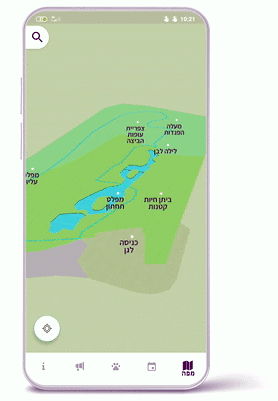
ירושמיים
אפליקציה ירושלמית פופולרית: מזג האוויר בעיר, שיתוף תמונות מהמשתמשים, והתראות על אירועים ועדכונים. אותו קהל ירושלמי שמבקר אצלכם בגן.
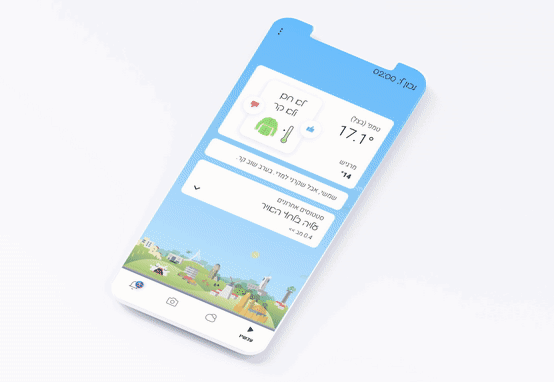
Service Link
אפליקציה שמנהלת טכנאי שירות בצפון אמריקה. הטכנאי מקבל מסלול יומי על מפה, עם עצירות ממוספרות, ניווט ביניהן וניהול הקריאה בשטח. זה הרכיב היקר באפליקציה שלכם, וכבר בנינו אותו.
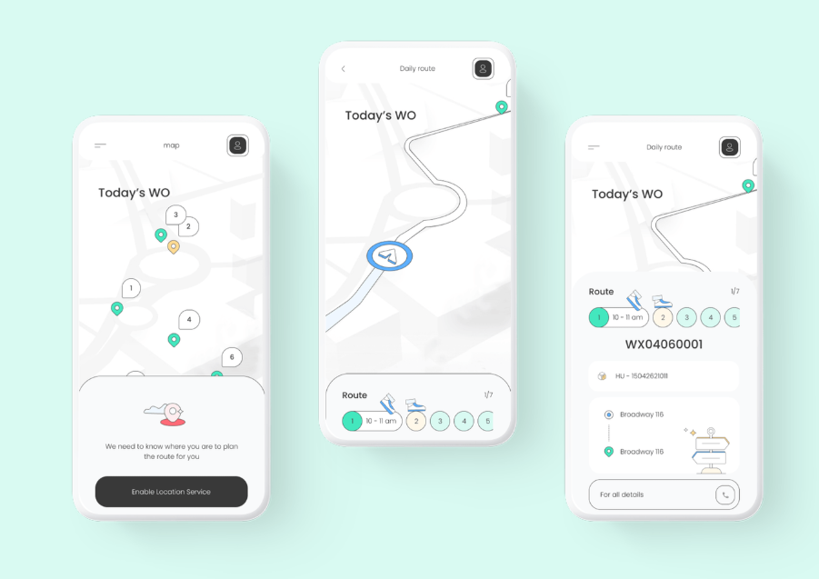
מיזם מיגור המלריה באפריקה
מערכת שמנהלת קמפייני ריסוס בכפרים בגאנה. מפת לוויין מחולקת לאזורי סריקה, כל אזור נמדד באחוזי כיסוי, והדיווח מגיע מהשדה גם ממקומות בלי תשתית תקשורת.

Express City Wash
מערכת מנויים ל-24 סניפי שטיפת רכב. 40,000 מנויים בחודש ו-100,000 שטיפות ביום: חיוב חוזר, מימוש בשטח, ניהול לקוחות ובקרה על כל סניף בנפרד.
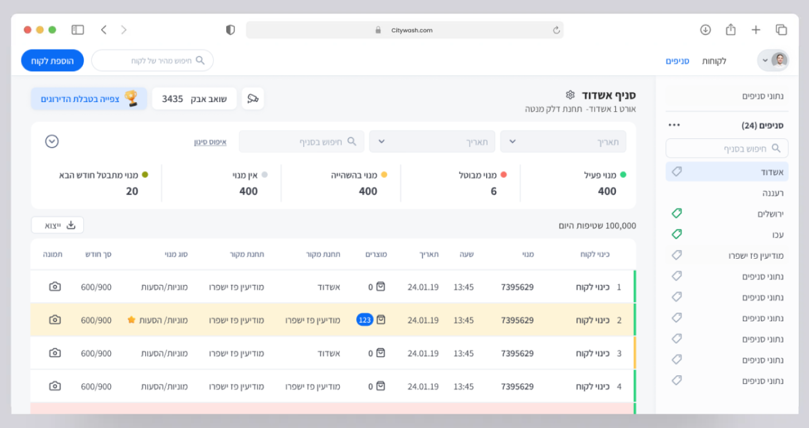
SparkIL · הסוכנות היהודית
פלטפורמת הלוואות P2P שמחברת תומכים בעולם לעסקים קטנים בישראל. גיוס, מעקב על החזרים, תשלומים, סיפורי לווים וסינון לפי קטגוריות, בעברית ובאנגלית.
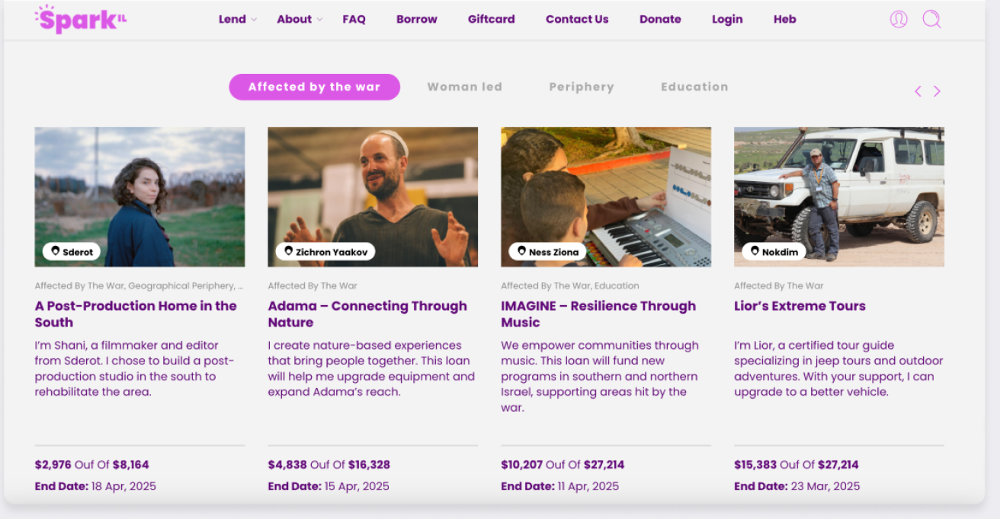
AMIT LMS
מערכת למידה לרשת חינוך ארצית: ניהול תוכן ומסלולי למידה, עורך שיעורים, מעקב התקדמות אישי ודשבורדים למורים ולתלמידים.

"where plants grow people"
חצי יום בגן, עם המספרים שלכם על השולחן: כרטיסים, מנויים, מחזור החנות והרשמות לקורסים. משם נבנה את מודל ההחזר, ונגזור ממנו היקף ולוח זמנים.